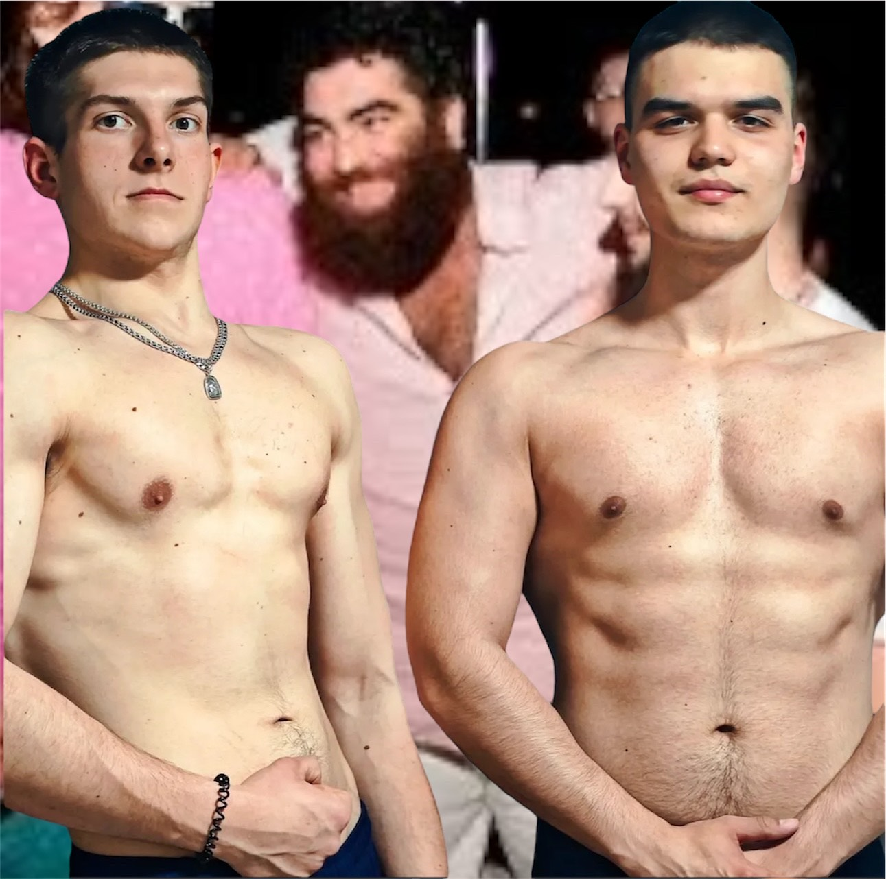
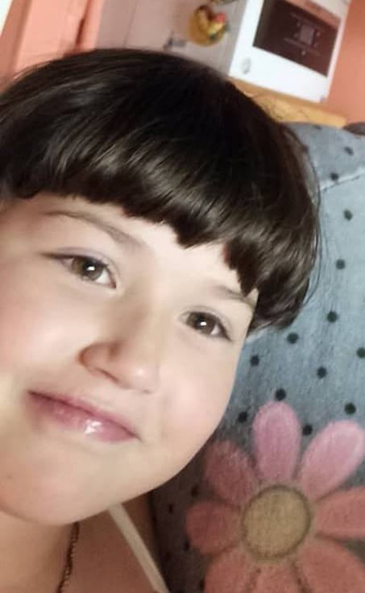

Прогулянка з бабусею
Міша щодня гуляє з бабусею парком. Вони розмовляють про життя, годують голубів і сміються.

Одного сонячного дня Міша Луговий, вічний експериментатор і любитель пригод, вирішив прогулятись із бабусею. Але не просто в парк, а туди, куди жодна бабуся ніколи добровільно не пішла — в самісінький циганський табір, що розкинувся на краю міста біля старого кар'єру.
— Ой, Мішенько, ну ти шо, з глузду з’їхав? — бурчала бабуся, затягуючи хустку під підборіддя. — Мені шо, нема чим більше нерви псувати?
— Бабцю, та шо ти як не своя. Там же колорит, романтика, шампанське в пластикових стаканах! — заспокоював її Міша, ховаючи під куртку пляшку самогону на випадок "подарунку за гостинність".
Коли вони підійшли, табір уже гудів як вулик. Кози бігали між наметами, діти ганяли з каструлею на голові, а десь у кущах дядько з гітарою співав пісню, де кожне друге слово починалось на "бл" і закінчувалось на "дь".
Бабуся перехрестилась і прошепотіла: — Господи, хай ці цигани не вкрадуть мою душу… або хоч зубний протез!
Міша, мов справжній дипломат, підійшов до вожака табору — чолов’яги з вусами, як у лисиці, і капелюхом, що бачив ще весілля Наполеона.
— Добрий день, поважний пане! — мовив Міша. — Ми з бабусею хочемо культурно зануритись у вашу атмосферу!
Вожак примружився, понюхав повітря і мовив: — Занурюйтесь, раз уже приперлись. Тільки бабцю тримай ближче, бо в нас Барабашка малий любить красти пенсії прямо з кишень!
І тут почалось. Бабуся, що спершу боялася, вже за п’ятнадцять хвилин розливала по стаканах самогон і горлала:
— Ой, ану давай мені ту вашу пісню з тим словом, шо починається на "йоб-"!
Діти навколо верещали, півень сів їй на плече як на пірата, а Міша вже вчився танцювати циганочку, хитаючись так, ніби в нього три ноги й жодна не слухається.
А ввечері, коли бабуся вже намагалася закурити сигару догори дригом, Міша сказав:
— Бабцю, ти шо, все життя мені казала "Не пий, не гуляй, знай міру", а тепер сама як коня гониш!
Бабуся плюнула через плече і сказала:
— Міша, я прожила 74 роки — і це перший раз, коли я реально веселюсь. Так шо йди ти до дідька зі своїми моралями, і підлий мені ще трошки того шмурдяка, що ми привезли!
"Так бабуся і залишилась у таборі. Міша ще довго шукав свої моралі — але пенсію так і не знайшов."
Рис — його пристрасть
Міша їсть рис руками, бо так смачніше. Він каже: "Якщо не руками — то й не рис!"

Головний фанат Арсена Маркаряна
Міша настільки захоплений Арсеном Маркаряном, що зберігає його фото і ніколи не пропускає жодного виступу. Це справжня пристрасть ❤️🔥
А також у нього є сестра Маша Лугова
Хоч вона і жирне уєбіще, але ось посилання на її улюблену соцмережу: Перейти на OnlyFans
Циган і бабка
Циганські хроніки — це неймовірна пригода Міші та бабусі у таборі, де все можливо.